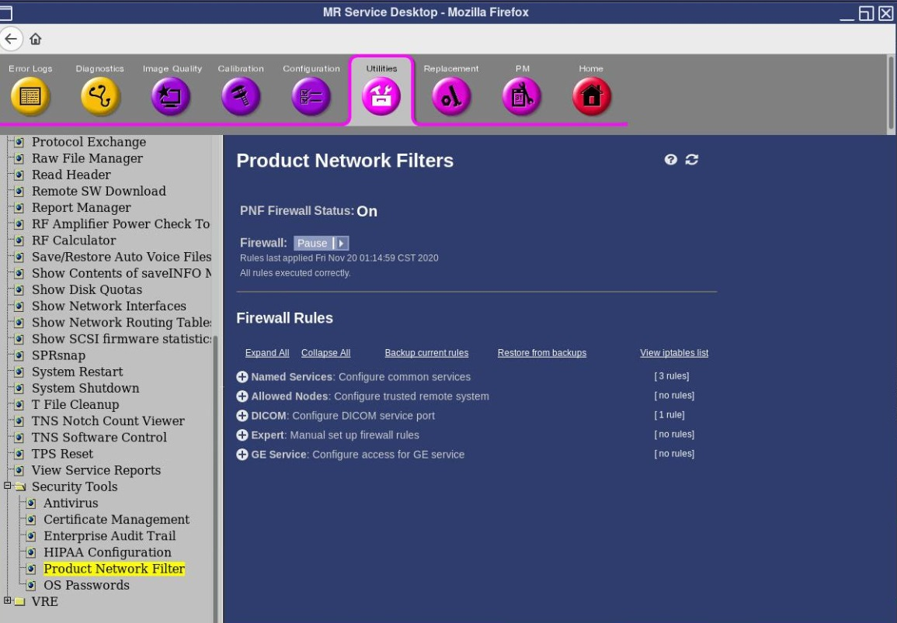
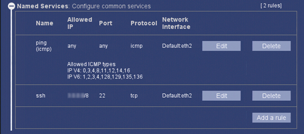
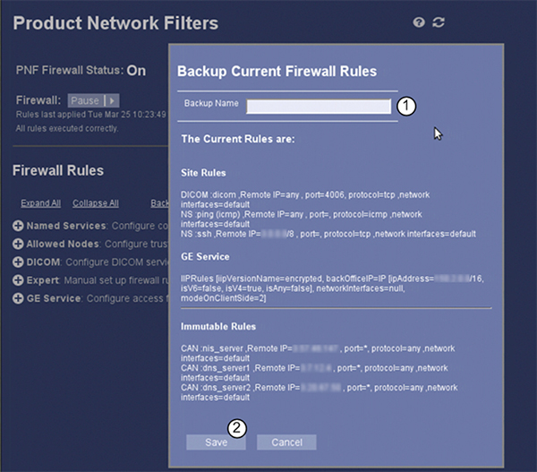
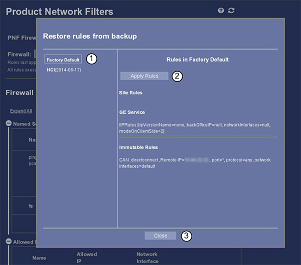

Product Network Filters
1 Software Release
1.1 Overview
Product Network Filters (PNF) is a software firewall tool that allows a site Network Administrator to control traffic from the site's internal network to the Diagnostic Imaging System. This tool was created in response to the customer's need for security.
- Click the Utilities tab on the Common Service Desktop (CSD) and select Product Network Filter.
Figure 1. Main PNF screen

- Click Click here to go to the link.
Figure 2.

note: When accessing PNF configuration, the firewall status displays Pause, but is still turned On. - The main page of PNF configuration will appear.
Figure 3. Configure PNF screen

1.2 Firewall rules (filters)
 |
|
Firewall rules are categorized in the following manner:
Figure 4. Firewall rules categories

1.3 Edit or add a rule
|
|
- By expanding Named Services, the user will see all rules applied as well as the Edit, Delete and Add a rule buttons.
Figure 5. Named services

- Click Edit to open the Edit a firewall rule page.
Figure 6. Edit a firewall rule

- Make changes required and then click Save.
- Adding a rule in the category may be accomplished by clicking Add a rule button and completing the necessary information in the Add a Rule page.
- Rules previously created may be deleted by selecting Delete.
1.4 Backup current rules
Use this feature for creating a backup of the firewall rules once the system has been fully installed, the options loaded and the application features configured. This backup can be used to restore the firewall rules if software corruption occurs or to recover from improper configuration attempts. Also note that the firewall rules are included in the system state backup.
To create a backup of the firewall rules:
- Click the Backup Current Rules link on the PNF Configuration page.
- The Backup page will open.
- Enter a Backup Name for the backup file, then click Save.
Figure 7. Backup Current Firewall Rules

The backup file will be created and saved in the /usr/share/gehc_security/pnf/backups directory. The filename is a combination of the date and the name the user applied to the backup.
1.5 Restore from backups
To restore a backup of the firewall rules:
- Click the Restore from Backups link on the PNF Configuration page.
- The Restore rules from backup page will open.
Figure 8. Restore rules from backup

- Select desired backup file from the list.
- Once the backup file is selected, click Apply Rules to load rules to system.
Figure 9. Select backup file

- Click OK to restore and apply firewall rules.note: The new rules are applied automatically and the firewall is restarted. It is not necessary to manually restart the firewall.
Figure 10. Apply rules

2 Finalization
- Close the Service Desktop.
- If changes have been made in the PNF configuration, run save System State. Run System State - Save and Restore from the Software procedure list.